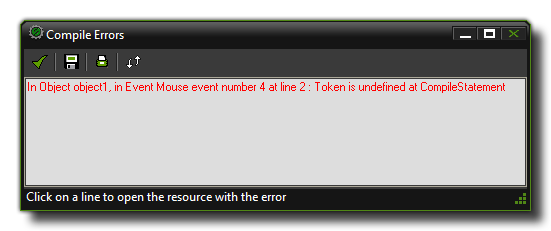

当创建你的游戏时，很容易去忘记声明一个变量或者将一个字符串误认为是实数等等……这些错误将会被GameMaker: Studio在游戏即将被编译的时候挑出然后一个带有被给出的错误以及错误出处窗口将会被打开，如下图所示  你可以点击任意一行显示的文本并且你将会被直接带到抛出错误的这个物体，并且接下来你能够使用这个消息里面的信息来确定错误发生于物体的什么位置。然而，有些时候这些错误可能有点隐晦，所以下文中你能看到一个全部错误的完整列表以及它们含义的一个简短解释。
>unknown function or script
你引用了一个不存在的函数或脚本。这可能发生于你误拼了一个函数或者移除了还在游戏的物体中被使用的脚本。
>Unable to find script
你引用了一个在资源中不再能被找到的脚本。
>Execute script action is not bound to a script
你对一个不存在的脚本使用了"execute script"动作。
>Failed to parse action_execute_script() - incorrect number of arguments received
execute script动作被给予了错误数量的参数。
>Trying to set a read only variable
你尝试去对标记为只读的变量进行赋值（实数或字符串）。比如说：
phy_com_x = 12;
这将会给出一个错误因为phy_com_x是只读的。
>Constant is invalid here
你放置了一个对于代码并不合适的常量。
>Malformed repeat statement
>Malformed if statement
>Malformed while statement
>Malformed do statement
>Malformed for statement
>Malformed with statement
>Malformed switch statement
>Malformed break statement
>Malformed continue statement
>Malformed exit statement
>Malformed return statement
你的语句的结构不正确。对于具体细节请参见这里的相关章节： GML 概述
>Keyword until expected
你建立了一个"do...until"循环但是没能提供"until"部分。参见 GML 概述 - do
>If requires a then statement
你遗漏了一个if语句的then部分。参见： GML 概述 - if
>Statement in a switch MUST appear after case or default
你在一个switch结构内的case或default的外部安插了一个功能语句。比如：
switch(id)
{
if x == 12 game_end(); break;
}
>Break used without context
你在代码中使用了一个break，而这个位置中break本不需要或无意义。
>Continue used without context
你在代码中使用了一个continue，而这个位置中continue本不需要或无意义。
>Calling a function that needs an instance and no instance is available
当你正在使用一个形如instance_...的函数而运行这段代码的时候实例不存在时这个错误将被显示。
>Calling a function that needs an \"other\" and no \"other\" is available
当你使用other引用一个实例而运行这段代码的时候实例不存在，比如说，在一个碰撞事件中你已经销毁了other实例时这个错误将被显示。
>Argument naming error, {n} arguments but no reference found to {a}
你对一个脚本提供了一系列的参数，其中一个或多个并不代表任意一个值。
>Wrong type of arguments for *
>Wrong type of arguments for /
>Wrong type of arguments for div
>Wrong type of arguments for Mod
>Wrong type of arguments for +
>Wrong type of arguments for -
>Wrong type of arguments for &&
>Wrong type of arguments for ||
>Wrong type of arguments for &
>Wrong type of arguments for |
>Wrong type of arguments for ^
>Wrong type of arguments for <<
>Wrong type of arguments for >>
你对一个表达式提供了错误类型的参数（或者实数或者字符串）。比如你遇到向下面这样的东西：
if "Hello" div 4
{
//do something;
}
你将会得到这个错误因为你不能对一个字符串使用div。对于具体细节请参见这里的相关章节： GML 概述 - 表达式
>Division by 0
除以0是不可能的并且因此你将会在GameMaker: Studio代码尝试做这件事时得到这个错误。
>Modulo by 0
你会在求余表达式中尝试用0作为它的运算元的时候得到这个错误。
>Cannot compare arguments
这个错误告诉你一个或多个表达式正在尝试和字符串和实数进行运算，有些东西不被允许。比如：
if "Hello" == 74
{
//do something;
}
这将会给出一个错误因为你不能比较两个类型彼此不同的值。
>Symbol } expected
>Symbol { expected
>Symbol ) expected
>Symbol ( expected
>Symbol: expected
>Symbol , or ) expected
>Symbol , or ] expected
>Symbol ] expected
你的代码从语法上遗漏了上述符号之一。这个错误正常地在代码编辑器里被挑出并且为你高亮出来。
>Assignment operator expected
这个错误将突发于你遗漏了表达式中的一个运算符。比如：
if var1 var2 == var3
{
//do something;
}
上述代码遗漏了"var1"和"var2"之间的运算符并且因此会给出这个错误，尽管正常地，这将会在编译之前被代码编辑器挑出。
>Unexpected symbol in expression
你在表达式中错误的位置存在一个符号（像/,*,+等等等……）。这正常地应当被代码编辑器的语法检查器挑出。
>Only 1 or 2 dimensional arrays are supported
GameMaker: Studio只允许一或二维数组并且当你想要尝试去创建任何更大维度的数组你就会得到这个错误，详情请见： GML 概述 - 数组
>Variable name expected
你写了一个期待着一个变量来被使用的表达式而并没被提供，比如：
if obj_Control. = "Hello"
{
//do something;
}
因为在运算"."后面没有变量，你将会得到这个错误。